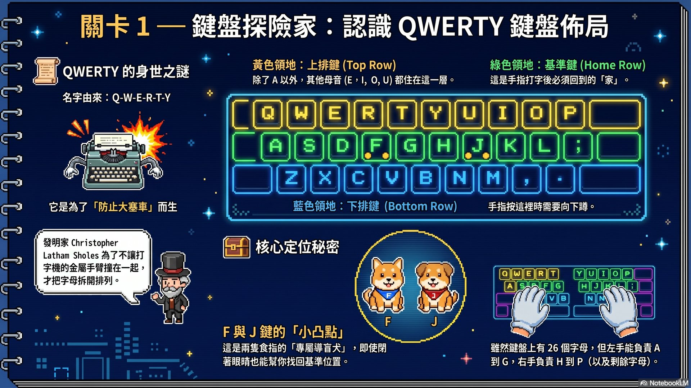
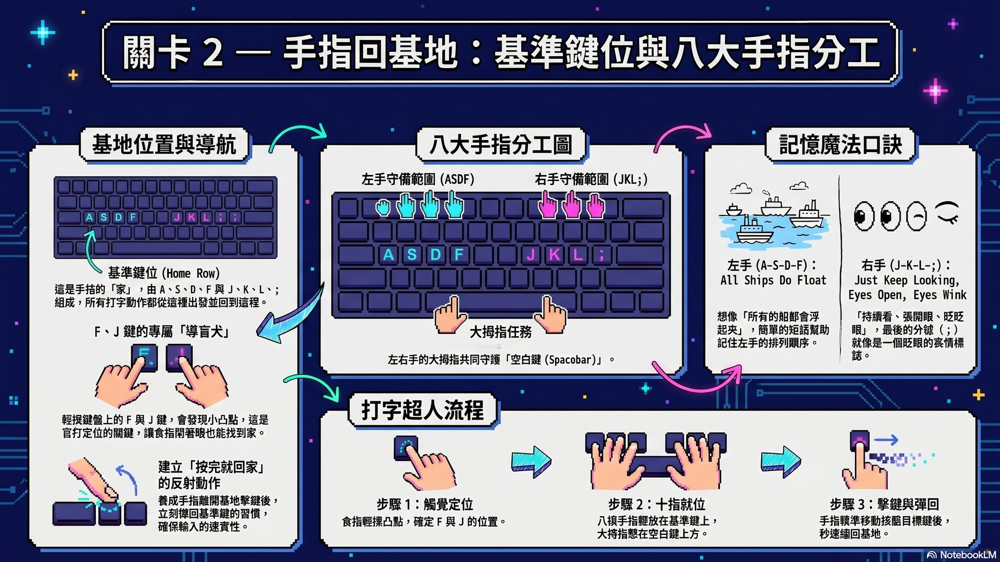
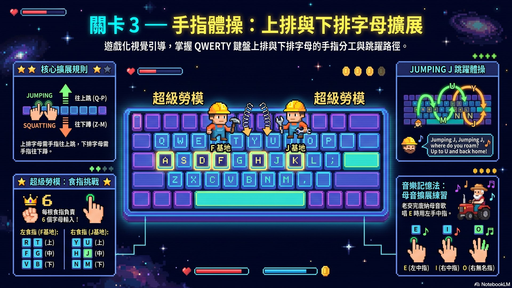
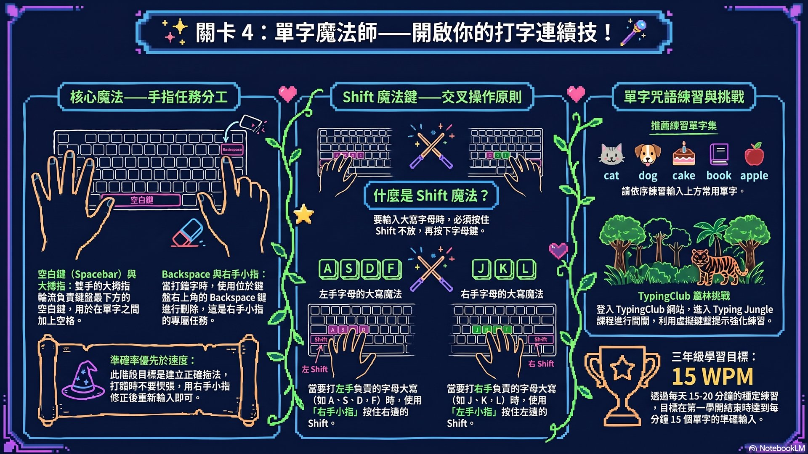
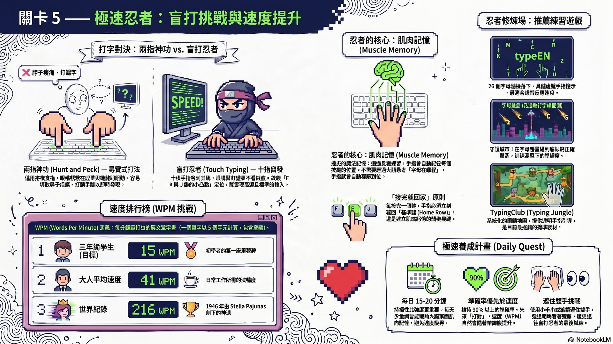

⌨️ 鍵盤魔法學院：打字小超人養成計畫
🎯 學習目標
🗺️ 鍵盤探險家：認識 QWERTY 鍵盤
🔤 為什麼叫 QWERTY？
看看鍵盤左上角的第一排字母，從左到右唸出來就是 Q-W-E-R-T-Y！很久以前的打字機如果打太快，金屬手臂就會卡住「大塞車」。發明家 Christopher Latham Sholes 把常用字母拆開排列，發明了這種防塞車的設計。
🎨 鍵盤的三大顏色分區
- 綠色 Home Row：A S D F G H J K L ; （手指的家）
- 黃色 Top Row：Q W E R T Y U I O P （上排，所有母音除了 A）
- 藍色 Bottom Row：Z X C V B N M （下排，較少用）
🎮 互動：QWERTY 鍵盤拼圖
點擊不同顏色按鈕，看鍵盤的顏色分區！特別注意 F 和 J 鍵下方的小凸點。
關卡測驗 — STAGE 1
🎓 教師提示
- 用真實鍵盤拆字實作：請學生找出自己英文名字的所有字母，記錄分別屬於哪一列
- 強調 F 和 J 的小凸點是「全世界鍵盤的標準」，現場讓學生閉眼摸看看
- 延伸：可以問為什麼 Home Row 叫「Home」（手指的家，所有打字動作的起點與終點）
- 不要急著教指法，第 1 堂課讓學生先熟悉鍵盤結構與顏色分區即可
🏠 手指回基地：基準鍵位與八大手指分工

📍 找到秘密基地：F 與 J 的小凸點
閉上眼睛摸摸看鍵盤，F 鍵和 J 鍵下方有兩顆小凸點！這是給兩個食指的「導盲犬」，讓你閉著眼睛也能找到位置。
✋ 八大手指分工表
- 左手小指 → A，無名指 → S，中指 → D，食指 → F + G
- 右手食指 → J + H，中指 → K，無名指 → L，小指 → ;
- 大拇指輪流負責空白鍵 (Spacebar)
- 食指是超級勞模：要負責 6 個字母（左：R T F G V B / 右：Y U H J N M）
🚢 左手 A-S-D-F：All Ships Do Float（所有船都會浮起來）
👀 右手 J-K-L-;：Just Keep Looking, Eyes Open, Eyes Wink（持續看，張開眼，眨眨眼 — ; 像眨眼睛）
🎮 互動：點選手指，看它負責哪個鍵！
點任一根手指，會顯示它的「家」鍵與口訣對應字！
🤚 左手
✋ 右手
關卡測驗 — STAGE 2
🎓 教師提示
- 讓全班一起背口訣，加上節奏拍手（A拍-Ships拍-Do拍-Float拍）
- 請學生閉眼摸 F、J 凸點，然後直接定位八根手指 — 第一次成功會超有成就感
- 提醒：手指要「輕輕擺放」在按鍵上不需用力，這樣按下去才迅速
- 延伸：教師可選擇 KidzType 的「Painted Finger Clues」遊戲讓學生實際體驗顏色對應
🤸 手指體操：上排與下排字母擴展

🦘 Jumping J 跳躍體操
右手食指放 J，往上跳到 U 和 Y，往下蹲到 M 和 N，每次都要彈回 J！
"Jumping J, Jumping J, where do you roam?
Up to U and back home!"
🎵 老麥克唐納母音歌
用《Old MacDonald》旋律唱："Old MacDonald had some vowels, E-I-E-I-O！"
- 唱 E 時 → 左手中指按 E（上排）
- 唱 I 時 → 右手中指按 I（上排）
- 唱 O 時 → 右手無名指按 O（上排）
🎮 互動：Jumping J 動畫
點擊不同字母按鈕，看食指如何往上跳、往下蹲、再彈回家！
關卡測驗 — STAGE 3
🎓 教師提示
- 全班一起做 Jumping J 體操，邊念童謠邊比動作，建立肌肉記憶
- 母音歌可以延伸：U 用右手食指（J 的上方）、A 用左手小指
- 強調食指要學會「跨距離」按 G 和 H（左食指要伸到 G、右食指要伸到 H）
- 提醒：小指和無名指比較弱，學生會想用食指代按 — 一定要堅持正確指法
✨ 單字魔法師：短單字連續打字

🪄 三大特殊鍵
- 空白鍵 (Spacebar)：左右大拇指輪流按，分隔單字
- Shift 鍵：要打大寫時用「另一邊的小指」按住，再按字母
- Backspace 鍵：右上角，用右手小指按，刪除錯字
左邊字母大寫 → 用右手小指按右 Shift
右邊字母大寫 → 用左手小指按左 Shift
📝 三年級推薦練習單字
由淺入深，從 3 個字母到 6 個字母：
cat, dog, pen, ice
book, cake, lion, fish
apple, water, happy, school
family, school, rabbit, monkey
🎮 互動：迷你打字練習器
直接用鍵盤輸入下方單字，正確的字母會變綠色，按錯會變紅色！
關卡測驗 — STAGE 4
🎓 教師提示
- 從 Home Row 字開始（sad、ask、lad、jak），所有字母都在基準鍵
- 練 Shift 時可以打學生自己的英文名字，超有動機
- 強調：打錯字的本能反應是用 Backspace（不要拉滑鼠回去刪）
- 推薦線上工具：TypingClub Typing Jungle 適合系統性學習，免註冊試玩
🥷 極速忍者：盲打挑戰與 WPM 速度

🥷 什麼是「盲打」？
盲打 (Touch Typing) 就是完全不看鍵盤打字！眼睛只看螢幕，手指自己知道每個鍵的位置 — 這就叫做「肌肉記憶」。
🐢 三年級目標：15 WPM
🚶 大人平均：41 WPM
🚀 世界紀錄：216 WPM（1946 年 Stella Pajunas）
🎯 盲打訓練 4 個秘訣
- 用毛巾或紙板蓋住雙手，強迫眼睛看螢幕
- 初期速度會掉到 10 WPM，這很正常 — 慢慢來
- 準確率要先達到 90% 以上才算合格
- 每天 15-20 分鐘，比週末練 2 小時還有效！
🎮 互動：30 秒 WPM 測速挑戰
按「開始」後，30 秒內盲打下方文字，看看自己達到幾 WPM！
關卡測驗 — STAGE 5
🎓 教師提示
- 提醒學生：剛開始盲打速度會掉，這是正常的「學習低谷」
- 強調「準確率 90% 才合格」，避免養成錯誤的肌肉記憶
- 可分組 PK：用 typeEN 或字母彗星比賽，最後算每組平均 WPM
- 提供記錄表：請學生每週紀錄自己的 WPM，看曲線進步
- 若學生小指弱按不到 A、; 也不要強迫，可以暫時用無名指代替，慢慢練
📋 今日實作任務
完成以下任務，把今天學到的指法立刻用出來！
📚 NotebookLM 資源站
這個駕駛艙的所有教學內容都來自 NotebookLM 整理的英文打字教學資料，你也可以打開 NotebookLM 自己研究：
教學簡報精簡本
本駕駛艙生成簡報、影片、資訊圖表使用的精簡筆記本（2 個來源）。
深度研究資料庫
34 個來源完整研究本，包含 Keyboarding Without Tears、TypingClub、KidzType 等專業資料。
typeEN 練習工具
本單元搭配的字母下落練習遊戲。打開鍵盤練習 26 個字母的反應速度！
🤖 NLM 串接流程說明
本駕駛艙由 NotebookLM 深度研究 (Mode B) 自動產出：
- NotebookLM 深度研究模式自動搜尋 40+ 個英文打字教學資料
- 用 5 個 notebook_query 萃取「步驟、概念、注意事項、活動、FAQ」精華
- 建立精簡本（萃取文字 + 主講者圖片）讓 NLM 識別教學插畫角色
- 並行生成 1 份簡報、1 段教學影片、5 張資訊圖表
- Claude Code 將圖片優化為 1920×1080 JPG，組合成這個互動駕駛艙
- 影片自動上傳到 YouTube，部署到 GitHub Pages
❓ 常見問題 FAQ
📊 授課簡報
下方是這個單元的完整授課簡報，由 NotebookLM 自動生成（含主講者插畫人物）。可點縮圖跳頁、按 ⛶ 全螢幕觀看。
（NLM AI 正在為主講者畫插畫，請稍後重新整理頁面查看簡報）
🎬 學生自學影片
NotebookLM AI 為你生成的英文打字教學影片，建議搭配上方簡報觀看效果最好。